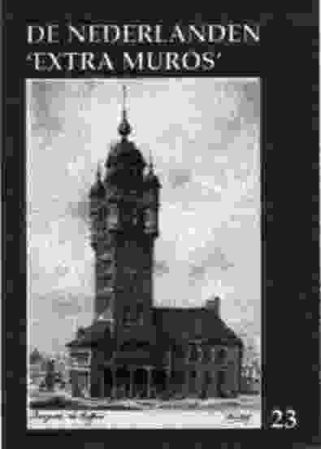

BIJDRAGEN OVER :
Mededelingen
Hernieuwing bijdrage
Traditiegetrouw bleef nog zowat 1/4 van de leden totnogtoe "in gebreke";
ze kunnen zich alsnog in regel stellen en het Jaarboek de Nederlanden 'extra
muros' ontvangen voor de ledenprijs van 750 BEF,42 FL,37 DEM of 125 FFR.
Dit aanbod geldt tot 15 juli 2001.
Studie-uitstap Zannekin
Op 13 oktober Studie-uitstap (busuitstap naar Grevelingen en Broekburg).
Over deze laatste activiteit verneemt u meer in volgende Nieuwsbrief.
Genealogische databank op CD-rom (2)
In onze Nieuwsbrief 1/2001, p. 4-5 vestigden we de aandacht
op een eerste genealogische CD-rom gerealiseerd door het Heimatverein der
Erkelenzer Lande e.V. Dezelfde vereniging bracht onlangs een tweede CD-rom
op de markt waarbij 22 nieuwe Ämter aan bod komen, met 92.591 geboorte
en/of doopgegevens, 22.456 huwelijken en 54.908 sterfgevallen; in totaal
681.879 persoonsgegevens over de periode 1642-1828. Het betreft de plaatsen
Amern, Beeck, Bickendorf, Dremmen, Hergerath, Heinsberg, Hillensberg, Holzweiler,
Karken, Kleinenbroich, Korschenbroich, Liedberg, Lüttelforst, Narienberg
en Oberkrüchten. Besteladres en méér info: Theo Görtz,
Johannismarkt 17, D. 41812 Erkelenz, Tel. 02431/85-208, E-post: theo.goertz@erkelenz.de.
De CD-rom draait onder Windows 95/98. Voor andere systemen kan de reader
kosteloos van het internet geladen worden via htpp://adobe.com
Wederwoord
De bijdrage Europese Top in Nice in vorige Nieuwsbrief
was aanleiding tot volgende overwegingen van 'n lezer uit Amsterdam: "Hier
is sprake - aldus de lezer - van onbarmhartige zelfkritiek van de
Belgische (?) redacteur, d.w.z. de eigen regering moet het ontgelden. Als
Nederlander zou ik het tegenovergestelde willen beweren: door het klein--zielige
gedram van het kabinet Kok is onnodig een bevriend broederland tegen de
haren ingestreken, en waarvoor? Voor een paar miezerige stemmen die op
het totaal van de Unie toch niets uitmaken. En Nederland een 'middelgrote
staat' noemen, dat is voor deze stip op de wereldkaart toch echt teveel
eer. Daarvoor moet een land toch wel een paar keer groter zijn. De geest
van 1830 zou ik in dit verband dan ook niet aanhalen." Einde citaat.
Felix Timmermans te Kempen
Van 6 mei tot 31 augustus 2001 loopt er in de Kuhtor te Kempen aan
de Nederrijn een tentoonstelling gewijd aan Felix Timmermans' Deutschlandreisen.
Naar aanleiding van de opening van de tentoonstelling werd meteen ook de
nieuwe Timmermansbiografie Felix Timmermans. Ein Dichter aus Flandern
voorgesteld.
Ze is van de hand van Drs. Ignaas Dom. Tentoonstelling en biografie zijn
beide initiatieven van de bloeiende Felix Timmermans-Gesellschaft e.V.,
Dr. Verweyen-Strasse 8, D. 47551 Till-Moyland. Verdere info: tel/fax. 058-14/65
85; e-post p.u.l.wolters@ftgev.de
De vereniging heeft ook een webpagina onder: www.felix-timmermans.de
Kruisboogschutters in Frans-Vlaanderen
Op 10 juni a.s. houden de kruisboogschutters van de Crayhofgilde
van Capelle la Grande hun 3e Koningsschieting. De gilde ontleent haar naam
aan de 16e eeuwse hoeve De Crayhof waar ze haar "circle de tir" heeft.
Het embleem van de gilde draagt een Bourgondisch kruis, geflankeerd door
de wapenschilden van Vlaanderen en van Capelle la Grande (gelegen op 8
km van Duinkerke. Méér info over de gilde: www.multimania.com/crayhof
Bundesgemeinschaft Deutsch-Niederländiche Kulturarbeit
Deze vereniging - met zetel te Borken - heeft zich tot taak gesteld
een versterkte culturele uitwisseling met de nabij gelegen Nederlandse
gebieden in de hand te werken. Zij vormt de overkoepelende instelling,
die alle in de Duitse Bondsrepubliek bedrijvige organisaties bundelt, die
zich toeleggen op culturele contacten met de Nederlanden. Op 18 en 19 mei
jl. hield ze respectievelijk te 's Heerenberg en te Emmerich een voorjaarsactiviteit
waarop het thema Sprache und Identität centraal stond.
EUVO aan de eer
Op 21 april jl. mocht E.H. Luc Vranckx, te Heimfriedswylder (Wierre-Effroy)
in het Boonse, 'n Visser Neerlandia-prijs in ontvangst nemen uit de handen
van Mevr. An de Moor. EUVO is 'n werkgroep die sedert 1988 poogt
het Nederlandse karakter van de Nederlanden in Frankrijk te herstellen,
door het aanbrengen van Nederlandstalige naamborden. Er werden er totnogtoe
niet minder dan 455 aangebracht op boederijen, woonhuizen en herbergen.
Daarnaast kregen reeds 600 straten hun oude Vlaamse naam terug en werden
reeds 10 gemeentehuizen opnieuw tot Wethuys omgedoopt. Een lovenswaardig
initiatief dus, waardoor meteen bewezen wordt dat het hier niet gaat om
Frans grondgebied, maar wel degelijk om oud-Nederlandse territoria.
Jaarboek De Nederlanden 'extra muros' 23 (2001)
In het zopas verschenen nieuwe ZANNEKIN-Jaarboek - het 23e in
de rij - komen volgende bijdragen aan bod:
* In De grote Geus: Hendrik van Brederode schets dr. A. van Hulzen de rol die deze medestander van Willem van Oranje gespeeld heeft in de jaren die de eigenlijke Nederlandse opstand tegen Filips II voorafgingen. Naast de algemene context van die jaren heeft de auteur vooral oog voor de gebeurtenissen die zich afspeelden in de (thans) Nederlandse randgebieden, inzonderheid de Franse Nederlanden.
* Frans-Vlaanderenkenner Cyriel Moeyaert besteedt uitgebreid aandacht aan Pieter Andries, priester-leraar in Sint-Winoksbergen. Pieter Andries was een van de mensen die een uitgebreid antwoord verstrekten op de enquête die abbé Grégoire, in 1790 namens de Franse overheid, inrichtte met betrekking tot de in het revolutionaire Frankrijk gesproken streektalen. Pieter Andries bouwde zijn antwoorden uit tot een ware apologia pro lingua neerlandica.
* In zijn Kroniek de Franse Nederlanden volgt Johan van Herreweghe andermaal de Frans-Vlaamse actualiteit met betrekking tot het jaar 2000 op de voet. Belangrijke en minder belangrijke, maar steeds significante feiten en gebeurtenissen passeren daarbij de revue.
* Een paar jaar terug besteedde Erik Martens aandacht aan de Boerenkrijg in de Romaanse gebieden van de Nederlanden. Thans behandelt hij Het gewapend verzet tegen de Franse Republiek in de Duitse Nederlanden. Daarbij komen, naast uiteraard de Luxemburgse Klöppelkrieg ook de tegenwoordige Oostkantons en de eraan grenzende (thans Duitse) territoria aan bod.
* Pieter Jan Verstraete voegde andermaal een hoofdstuk toe aan z'n compendium over de Friese Beweging. In deze aflevering komt Jan Melles van der Goot of Friesland en de Nieuwe Orde aan de beurt. Daarmee wordt een sluier gelicht over een meer recente periode van de eerder politiek gerichte tak van de Friese beweging.
* Aansluitend op z'n bijdrage in het vorige jaarboek rondt Zeno G.M. Kolks in deze editie zijn bijdrage af over de Toepassing van Bentheimer zandsteen aan gebouwen. Dit keer wordt bijzonder aandacht besteedt aan voorbeelden uit de woningbouw.
* Dr. Timothy Sodmann onderzoekt in zijn goed onderbouwde bijdrage over De historische en culturele betrekkingen tussen de Oostelijke Nederlanden en het Westmunsterland de wisselwerking tussen beide gebieden doorheen de eeuwen die aan de moderne staatsvorming voorafgingen.
* De traditionele slotbijdrage Kroniek en boekbesprekingen bundelt andermaal een reeks kortere bijdragen en recensies met betrekking tot uitgaven in en over de Nederlandse grensgebieden in Frankrijk en Duitsland.
Het nieuwe jaarboek telt andermaal 176 p. en is overvloedig geïllustreerd. De leden kregen het einde mei toegestuurd in ruil voor hun bijdrage (750 BEF, 42 Gld, 37 DEM of 125 FFR). Vanaf 15 juli bedraagt de prijs 850 BEF, 45 Gld, 43 DEM of 142 FFR (zie ook de rubriek 'mededelingen').
Van de Voorzitter
De lijn moet worden omgebogen
Als ik het in bovenstaand kopje heb over "de lijn", dan hebben die
woorden niet betrekking op de Vlaamse vervoersmaatschappij. Als daar iets
omgebogen zou moeten worden dan zullen ze dat zelf wel regelen. Nee, het
heeft alles te maken met onze vereniging. Op de jongste bestuursvergadering
(24.2.01) confronteerde de penningmeester de aanwezige bestuursleden met
de dalende lijn van ons ledenbestand. Tussen 1995 en 2000 daalde dit bestand
met net geen 20%. Vastgesteld werd - en nu citeer ik de notulen - "dat
daaraan iets gedaan moet worden". Vandaar dat ik me gezet heb tot het schrijven
van dit stukje tekst om u zo deelgenoot te maken van deze teleurstellende
gang van zaken. Om het probleem meteen maar scherp te stellen: we kunnen
rekenen op een trouw maar verouderend ledenbestand. Er gaat evenwel geen
maand voorbij zonder dat 'n overlijdenbericht een einde stelt aan een lidmaatschap.
Opmerkelijk is daarbij dat dit voor wat de Noord-Nederlandse leden betreft
correct meegedeeld wordt door de naastbestaanden; voor het Vlaamse luik
vernemen we een overlijden meestal alleen maar via retourzendingen met
het klassieke "overleden"-klevertje vanwege de postdienst. En ook al kon
de penningmeester geruststellend opmerken dat de financiële positie
van de vereniging alsnog gezond blijft, het kan zo uiteraard niet blijven
verder gaan.
Een tweede aspect betreft dus het gebrek aan verjonging binnen het
ledenbestand. Daaraan moet dringend iets gedaan worden, willen we de neergaande
trend ombuigen en het geheel van de activiteiten - zoals het uitgeven van
ons jaarboek en de Nieuwsbrieven - kunnen blijven bekostigen.
Het is tegen deze achtergrond dat ik me tot u richt met de oproep met
ons de handen ineen te slaan in de hoop daardoor het ledenbestand op een
hoger peil te brengen. Als ieder van ons erin slaagt één
nieuw lid te werven dan zal dat tot gevolg hebben dat de balans weer in
evenwicht gebracht is. We stel-len daartoe graag - op verzoek - onze folder
ter beschikking.
Dat nieuwe-leden-werven voor ZANNEKIN geen onmogelijkheid is, bewijst
ons bestuurslid mevr. Van Wallene. Zij slaagt er bij herhaling in potentiële
leden mee te nemen naar onze uitstappen en ontmoetingsdagen om hen via
deze weg ervan te overtuigen dat een lidmaatschap van onze vereniging de
moeite waard is. Hopelijk zijn er onder u die ook op deze wijze willen
helpen het ledenbestand weer op sterkte te brengen.
Een kortere rij
Gewoontegetrouw staat ook in de jongste aflevering van ons jaarboek
op p. 176 weer de lijst met de namen van hen die leiding geven aan onze
vereniging. Als u de moeite neemt deze te vergelijken met die in het vorige
jaarboek dan zult u ontdekken dat het rijtje één naam korter
is geworden. Uiteraard heeft dat zijn eigen oorzaak. Het is namelijk het
gevolg van de beslissing die mevr. Van der Wee genomen heeft naar aanleiding
van het punt "bestuursverkiezing" op de agenda van de jongste bestuursvergadering.
Zij heeft gemeend zich niet meer voor herverkiezing beschikbaar te moeten
stellen.
Tijdens deze bestuursvergadering heb ik haar niet kunnen bedanken daar
ze wegens familiale omstandigheden verhinderd was aanwezig te zijn. Maar
ook al zou ik dat wel gedaan hebben, dan zou ik niet nagelaten hebben daar
in deze Nieuwsbrief op terug te komen. Ik heb er grote behoefte aan haar
namens onze ledenkring dank te zeggen voor wat ze in de loop van de voorbije
jaren voor onze vereniging als bestuurslid heeft mogen betekenen. In de
mate van het mogelijke heeft ze zich laten inschakelen bij het inrichten
van onze activiteiten. Was dat niet altijd direct op het uitvoerende vlak
het geval dan toch zeker op dat van de daaraan voorafgaande beraadslagingen.
Een bijzonder aspect van haar optreden tijdens onze bestuursvergaderingen
ging schuil in de wijze waarop ze haar medebestuursleden tegemoet trad.
Daarin getuigde ze van de vriendschap die ze ieder persoonlijk toedroeg.
Groot was dan ook haar belangstelling voor ieders persoonlijke omstandigheden;
vooral was dat het geval als er in de thuissituatie iets schortte.
Al met al komt mijn verhaal erop neer dat we haar beslissing respecteren
maar het jammer vinden dat we dit stukje persoonlijke omgang voortaan zullen
moeten missen. Gelukkig verdwijnt ze niet volledig uit beeld; ze blijft
lid van onze vereniging en als zodanig hopen we haar nog menig keer te
mo-gen begroeten op een van de uitstappen en/of ontmoetingsdagen in de
loop van de komende jaren.
Een paradijs voor fietsers
Als u de Ontmoetingsdag in Kevelaer hebt meegemaakt - we komen er nog
op terug in de volgende Nieuwsbrief - zal het u niet ontgaan zijn
dat de omgeving van dit Nederrijnlands stadje zich uitstekend leent voor
het maken van een verkennende fietstocht. In feite geldt dit voor het hele
Nederrijnland; het is een gebied dat zich kenmerkt door het ontbreken van
opvallend grote verschillen in hoogte. Tegelijkertijd valt er te genieten
van de grote verscheidenheid aan landschappen en het daarmee "vergroeide"
natuurschoon. Kortom, het is een streek die terecht aangemerkt kan worden
als "een paradijs voor fietsers".
Men heeft er ook alles aan gedaan om daar "inhoud" aan te geven. Allereerst
heeft deze opmerking betrekking op de staat van de wegen en paden waarvan
gebruik gemaakt mag/kan/moet worden; die is zonder meer als uitstekend
te omschrijven. Vervolgens heeft ze te maken met het net van voorstellen
van fietstochten dat over het gebied is uitgespreid. Aan de hand van een
zeer duidelijke kaart is het bijna niet mogelijk het spoor bijster te raken.
Voor belangstellenden laat ik hier nog wat inlichtingen volgen m.b.t. enkele
nuttige uitgaven én het adres waar ze verkrijgbaar zijn:
1. Die NiederRheinroute (Radwanderkarte 1:75.000): Touristik-Agentur
NiederRhein GmbH, Mühlenstege 11, D. 47546 Kalkar.
2. Die Nieder-Rheinroute, ein Reiseführer zu Kultur, Natur,
Erleben am Niederrhein. Prijs. DEM 19,80;
3. Otmar Steinbicker, Die schönsten Radtouren am Niederrhein.
Prijs. DEM 22,80; beide verkrijgbaar op het reeds vermelde adres.
Marten Heida
Prins Willem Alexanderpark 53
NL 3905 CB Veenendaal, Tel. 0318-510 087
Laat vriendschap helen,
wat grenzen delen
Het hertogdom Gelderen als brug tussen de Nederlanden en Duitsland
In het jaar 2001 viert de Historische Verein für Geldern und Umgegend
e.V. haar 150-jarig bestaan. De in 1851 opgerichte vereniging is de tweede
oudste geschiedenisvereniging in het Rijnland en behoort, met haar 1300
leden tot de grootste dergelijke verenigingen in de Bondsrepubliek.
Om dit jubileum waardig in de kijker te stellen, is in samenwerking
met talrijke - zowel Duitse als Nederlandse - universiteiten, musea en
archieven, een groots projekt ter hand genomen, om de geschiedenis en de
cultuur van het hertogdom te onderzoeken en te boek te stellen.
Waar de geschiedenis van de aangrenzende Nederrijnse territoria (de
hertogdommen Gulik-Kleef-Berg, het keurvorstendom Keulen) reeds in belangrijke
thematische tentoonstellingen en catalogussen behandeld werden, ontbrak
totnogtoe een omvattend overzicht voor wat het voormalige hertogdom Gelderland
betreft. Nochtans was dit hertogdom in de Middeleeuwen en in de vroege
Nieuwe Tijd een van de toonaangevende territoria van Noordwest-Europa.
Zijn grote betekenis en hoogstaande cultuur zijn tegenwoordig nog amper
bekend. Het gebied werd immers door talrijke oorlogen verarmd, door meerdere
delingen verbrokkeld en door het ontstaan van de nationale staten tot een
economisch en politiek randgebied herleid.
Momenteel behoort het grootste deel van het voormalige hertogdom tot
de Noordelijke Nederlanden, i.c. tot de provincies Gelderland en Limburg,
terwijl het Duitse gedeelte van het hertogdom Gelderland een eerder bescheiden
deel van de Nederrijn vormt. Over meerdere eeuwen heen vormde dit, thans
door staats- en provinciegrenzen verminkt gebied een territorium waarbinnen
taal en cultuur verregaand één waren.
De huidige bewoners aan weerszijden van de grens is deze verwevenheid
op vlak van taal, cultuur en geschiedenis van de Gelderse ruimte in hoge
mate onbekend. De in de 19e eeuw aanvangende beklemtoning van de beiderzijdse
nationale staatsidentiteiten leidde tot een vervreemding, die dan nog door
de Duitse bezetting tijdens de Tweede Wereldoorlog, na 1945 tot een radikaale
breuk leidde.
Aan de gemeenschappelijke historische wortels te herinneren, wat verbindt
naar voor te brengen, een gemeenschappelijke interesse met het oog op enge
culturele, economische en politieke samenwerking in het spoor van het Europese
eenheidsstreven te beklemtonen: dit zijn de overwegingen die aan het voornemen
ten grondslag liggen om de geschiedenis van het hertogdom Gelderland te
onderzoeken en ruimere bekendheid te geven.
Wanneer bij de voorbereiding van het projekt deze overwegingen voorgelegd
werden aan de vertegenwoordigers van staats- en gemeentelijke overheden,
van universiteiten, musea en archieven, bleek overal op levendige belangstelling
en ondersteuning gerekend te kunnen worden.
In het kader van dit projekt ging reeds in 2000 het geschiedkundig
colloquium door onder het thema Een goede buur is een edel kleinnood,
waarover bericht werd in de Zannekin Nieuwsbrief 3/2000, p. 7-8.
Eveneens binnen dit projekt kaderde de tentoonstelling De Gouden Eeuw
van Gelre die we n.a.v. onze Ontmoetingsdag van 12 mei j.l. bezochten.
Een blijvende herinnering aan het projekt zal het geplande twee-bandige
handboek vormen, dat tot een standaardwerk betreffende de geschiedenis,
de kunst en de cultuur van het hertogdom Gelderland zal uitgroeien. In
Deel 1 zullen 50 auteurs uit verschillende disciplines de geschiedenis
en de cultuur van het hertogdom, vanaf de 11e eeuw tot heden uiteen zetten.
In niet minder dan 600 p., inclusief 220 illustraties en kaarten, zullen
aldus tien eeuwen Gelderse geschiedenis geboekstaafd worden. Deel 2 vormt
de catalogus van de tentoonstelling De Gouden Eeuw van Gelre, die
nog tot 24 juni a.s. loopt in het Nederrijnse museum voor volkskunde en
cultuurgeschiedenis te Kevelaer. De tentoonstelling beperkt zich tot objekten
uit de 15e en 16e eeuw, waarbij het leven in de steden, de in kerken en
kloosters ontwikkelde reli-gieuze cultuur, de Gelderse burchten en herenhuizen,
alsmede handschriften en incunabelen. Alle objekten worden in de catalogus
afgebeeld en beschre-ven, zodat ca. 250 kleurafbeeldingen aan bod komen.
Bron:
folders Laat vriendschap helen, wat grenzen delen , uitgegeven door
de Historischer Verein für Geldern und Umgegend, Boeckelter Weg 2,
D. 47608 Geldern.
Nederlands in Frans-Vlaanderen nog niet dood
Het gebruik van het West-Vlaams dialect neemt in Frans-Vlaanderen zeer snel af en het is erg onzeker of het als spreektaal overleeft. Initiatieven in de jaren '70 om het "Vlaamsch" te doen herleven, hadden weinig effect. In "le Westhoek" bestaan ook geen ouderverenigingen om tweetalig onderwijs af te dwingen, zoals de Bretoense, Occitaanse, Baskische, Catalaanse en Elzassische. Maar het openbaar onderwijs spant zich in om het Nederlands als vak te bevorderen.
Levende taal
Jacques Kooijman, inspecteur d'académie : "We spreken hier dan
ook niet over een dialect of een regionale taal, maar over een levende
taal, het Nederlands, een belangrijke voertaal van de Europese Unie." Kooijman
stamt af van ingeweken Nederlandse veetelers, maar is een geboren en getogen
champenois uit Troyes. Hij spreekt geen Nederlands, maar kan het wel lezen.
Als de gewezen universiteitsprofessor in het Middeleeuws Frans het onderwijs
van het Nederlands actief ondersteunt in het département du Nord,
heeft dat niets te maken met gevoelsmatige gehechtheid aan de taal. "In
het Noorden is het van cultureel en economisch belang om de taal van de
buren te leren", zegt hij.
De socialistische burgemeester en volksvertegenwoordiger van Belle (Bailleul), Jean Delobel, ziet het niet anders. Sinds 1990 laat hij Nederlands onderwijzen in de lagere scholen van zijn stadje, dat na de verwoesting tijdens de Eerste Wereldoorlog geheel in Vlaamse stijl is herop gebouwd. "In de kleuterschool krijgen de kinderen vanaf 5 jaar een speelse initiatie in het Nederlands, drie keer per week 20 minuten. De grotere kinderen krijgen anderhalf tot 2 uur per week", aldus Hedwig Raevel-Van Hemel, een jonge afgestudeerde in de Franse taal- en letterkunde van de Universiteit van Groningen, die al 11 jaar voor het stadsbestuur van Belle werkt, onder meer als taalassistente voor het onderwijs. Ze is lid van de vorig jaar opgericht afdeling Rijsel/Lille van de Orde van den Prince. (...) Het experiment in de lagere scholen begon in de jaren '80 in de streek van Duinkerke tot Belle, op initiatief van de rector van de academie van Rijsel. Zuid-Wervik (Wervicq-Sud) beet de spits af, gevolgd door Belle.
Keuze van de ouders
"De veralgemening van dat onderwijs van het Nederlands zou te duur
uitgevallen zijn, maar de verandering van de onderwijspolitiek stak een
handje toe", aldus Kooijman. "Nationale Opvoeding besloot in 1989 dat vroegtijdig
onderwijs van levende talen goed is, iets waarmee ik het volledig eens
ben. In 1994 ging het onderwijs van een levende taal deel uitmaken van
het programma van de laatste klassen van de lagere school. Het jaar nadien
moesten de jongere kinderen een initiatie in een levende taal krijgen."
De ouders mogen de tweede taal kiezen, maar moeten wel een taal kiezen
die onderwezen wordt in het college van de sector. "In het Noorden, waar
de colleges Engels, Duits en Nederlands onderwijzen, kan men één
van die drie talen kiezen voor vroegtijdig onderwijs."
Overal in Frankrijk blijkt Engels veruit de eerste keuze te zijn van
de ouders, met 82%. Daarna volgt het Duits (12%) en op een verre derde
plaats komen, naargelang de regio, Spaans, Italiaans, Portugees of Nederlands.
Bij de ouders in het Noorden bestond zeer weinig vraag om hun kind Nederlands
te laten leren. (...) Om de ouders te motiveren, mogen de kinderen bovendien
kennis maken met twee vreemde talen. "Ze verwerven hun eerste kennis van
het Nederlands, maar krijgen tegelijk een half uur Engels of Duits." De
inspectie zorgde er ook voor dat er geen hiaat komt in het college. "Per
uitzondering hebben we verkregen dat de scholieren ook in de eerste twee
jaren van het middelbaar onderwijs, naast Engels of Duits, al een uur Nederlands
krijgen. Anders zou deze taal gemarginaliseerd worden wegens onvoldoende
aanwezigheid in de colleges."
Maison du néerlandais
Dat het Nederlands nu officieel deel uitmaakt van het schoolprogramma,
vereist dat het door Franse onderwijzers gegeven wordt. Het probleem is
echter dat er onvoldoende Franse onderwijzers moeten worden opgeleid. Een
dochter van Jean Delobel werkt mee aan de opleiding. Zij is onderwijzeres,
heeft bijscholing gevolgd en is 2 jaar haar Nederlands gaan vervolmaken
in Maastricht. De afgelopen twee jaar werd ze door het ministerie van Onderwijs
gedetacheerd om het Maison du néerlandais in Belle vorm te geven.
Dat uitstralingscentrum voor het Nederlands, waaraan ook Jacques Kooijman
meewerkte, is geopend op 30 april 1999. Ondertussen kreeg het onderdak
in een mooi gerestaureerd oud pand. Het Nederlands Huis zou moeten
werken naar het voorbeeld van het Duitse Goethe Instituut. De inspanningen
voor het Nederlands zullen geen tweetaligheid bewerkstelligen in de Westhoek,
want die is vrijwel totaal verdwenen, maar dat is ook niet de bedoeling
van de promotoren. In hun ogen moet de kennis van het Nederlands in Frans-Vlaanderen
een brug vormen met het cultureel verleden, met de naaste buren en daardoor
ook met de toekomst. Bron: Nieuwsbrief Orde van de Prince,
jg. 19, nr. 2.
August Borms en Frans-Vlaanderen1
Hector van Oevelen
"Hier en aan de overkant, daar en hier is Nederland." Vlaanderen heeft
niet alleen in het noorden een overkant, maar ook in het zuiden heeft het
volksgenoten wonen, al behoren die dan officieel tot "la douce France",
dat hen op een niet al te "douce" manier trachtte te ontvlaamsen. Tot begin
de 20e eeuw was er in Vlaanderen zo goed al geen belangstelling voor onze
volksgenoten in de Zuidelijkste Nederlanden. Hadden onze voorouders niet
de handen vol met het terugdringen van de verfransing in de eigen samenleving?
Toch hadden de Zuid-Vlamingen, die hun eigenheid wilden bewaren, onze steun
broodnodig.
Dat in elk geval was de noodkreet die de Zuid-Vlaamse pastoor Emiel
Descamps liet horen op het eerste Vlaamse filologencongres in Antwerpen,
op 18 september 1910. De cultuur van het Nederlandse volksdeel in Frankrijk
was bedreigd, vertelde hij zijn toehoorders en Vlaanderen en Noord-Nederland
moesten komen helpen om het gevaar te keren. De oproep viel niet in dovemansoren
bij Mr. W.J.M. van Es, die een der ijverigste voorvechters voor Zuid-Vlaanderen
zou worden. Hij trok in 1911 naar de Westhoek en bracht enthousiast verslag
uit in Neerlandia, het blad van het Algemeen Nederlands Verbond.
De boodschap van pastoor Descamps bleef ook in Antwerpen niet zonder gevolg.
Op aanraden van Lode Baekelmans trokken enkele conservatoriumstudenten
naar Zuid-Vlaanderen om er zangavonden te organiseren. Hun eerste avond,
in de kerk van pastoor Descamps, was niet direct om over naar huis te schrijven
en van een tweede werd niks meer vernomen.
Een georganiseerde actie kwam er pas op initiatief van de dynamische
Cyriel Rousseeu een naar Antwerpen verhuisde West-Vlaming en geboren in
1882 op "de schreve" te Watou. Samen met die andere West-Vlaming in Antwerpen,
Hilaire Allaeys, ijverde Rousseeu voor de oprichting van een vereniging
die zich zou toeleggen op Vlaamse actie in Noord-Frankrijk. Allaeys had
onmiddellijk zijn steun toegezegd, maar hij vond dat er een derde man bij
betrokken moest worden en liefst een die een grote bekendheid genoot in
de Vlaamse Beweging. Als vanzelf viel toen de naam van dr. August Borms,
de "klok" die heel Vlaanderen al had horen luiden. En zo kreeg Borms al
gauw de algemene leiding van de vereniging die eerst Vlaamse Zangersgilde
was genoemd, maar later werd omgedoopt in Pro Westlandia2 en niet alleen
op bekende zangers maar ook op voordrachtkunstenaars en toneelspelers als
Staf Bruggen en Modest Lauwereys kon rekenen. Met die naam en artistiek
verantwoord, wilden de initiatiefnemers duidelijk maken dat het niet alleen
om Frans-Vlaanderen ging, maar om het hele "Westland" en dus ook om de
verdediging van de Vlaamse grensgemeenten tegen de verfransingsdruk. (...)
De gedreven actievoerders trokken vervolgens de grens over: Belle,
Hazebroek, Kassel (waar ze door een handvol relschoppers voor "pangermanisten"
werden uitgekreten). In de plaatselijke Franstalige pers maar ook in de
Vlaamse en Nederlandse bladen mocht het initiatief op lovende weerklank
bogen. Reden genoeg dus om ermee door te gaan. De volgende jaren werden
Wormhout, Sint-Winoksbergen, Duinkerke en andere aan Vlaanderen ontstolen
gebieden bewerkt. Hun optreden op 3 augustus 1914 in Kortrijk betekende
meteen het einde van hun actie, want 's anderendaags brak de Eerste Wereldoorlog
uit. Maar het zaad was gezaaid en geen wereld-brand zou het kunnen beletten
en ontkiemen en vrucht te dragen. Borms liet in elk geval de Zuidelijkste
Nederlanden niet los: hij wijdde er tijdens de oorlog een hele reeks artikelen
aan in Het Vlaamsche Nieuws en telkens als hem daartoe gelegenheid geboden
werd hield hij er voordrachten over. (...)
_________________
1 Dit hoofdstuk werd geput uit de brochure Borms leeft, uitgegeven
door het Algemeen Sekre-tariaat Bormskomitee, vzw, Baenslandstraat 41,
9100 St.-Niklaas.
2 Over de acties van Pro Westlandia, zie ook: Ward Corsmit, Culturele
verkenningen in Frans-Vlaanderen, de Pro Westlandia actie, in Jaarboek
Zannekin 4, 1982, p. 7-14.
Het Letzeburgs in Belgisch-Luxemburg
Vik Eggermont
Onnodig voor onze lezers hier de historie van het hertogdom Luxemburg
te schetsen. Ze weten dat dit hertogdom vandaag de dag verdeeld is over
niet minder dan vier staten: het gelijknamige Groot-Hertogdom, België,
Duitsland en Frankrijk. Ze weten ook dat in 1839 de verdeling van wat -
na de Franse veroveringen uit de 16e en 17e eeuw en de Pruisische annexatie
na 1815 - nog restte van het oude hertogdom, gebeurde volgens de taalgrenslijn
Luxemburgs-Frans. Of toch nagenoeg, want in het Franstalige deel waar het
Letzeburgs, zeggen we gemakshalve maar: het Luxemburgs gesproken wordt.
We hebben het hier over het Franstalige deel van Luxemburg, m.a.w.
de Belgische provincie. Een recente peiling van de werkgroep Langue du
Voisin (taal van de buur) onder voorzitterschap van Charles-Ferdinand Nothomb,
ons evenmin onbekend, bracht aan het licht dat ongeveer 14% van de Franstalige
Luxemburgers het Luxemburgs (Letzeburgs) min of meer beheerst. Opvallend
hierbij is dat deze 14% verspreid zit over de ganse provincie en dus niet
alleen in het gebied dat grenst aan het Groot-Hertogdom. Van die 14% behoort
weliswaar ongeveer 55% tot een leeftijdsgroep boven de 55 jaar en ouder.
De jongeren schijnen dus minder het Luxemburgs te beheersen. Onderzoek
wees uit dat de meesten die taal binnen de familie geleerd hebben, slechts
enkelen hebben het op school geleerd.
Gevraagd naar het nut van deze kennis vond 47% het nuttig de taal van
de Groot-Hertogdomse buur te kennen. Slechts 10% van de ondervraagden die
het Luxemburgs niet machtig zijn, zouden bereid zijn die taal te leren
zo ze er de kans toe kregen, wat eenzelfde percentage is als de bereidwilligheid
om Duits te gaan leren. Bij diegenen die wel Luxemburgs zouden willen leren
behoren de meesten tot de leeftijdsgroep tussen 15 en 34 jaar.
Ook is het opvallend dat 63% van de ondervraagden wensen dat hun kinderen
Luxemburgs zouden kennen. Daarvan zegt 80% dat dit het vinden van een betrekking
zou vergemakkelijken; 17% zou het doen om betere contacten met de buren
te hebben en 5% voor de cultuur, de overigen om gemakkelijker zijn vacantie
in het Groot-Hertogdom te kunnen doorbrengen.
Het is duidelijk dat de economische en financiële hoogconjunctuur
in het Groot-Hertogdom een sterke stimulans is om de Franstalige Luxemburgers
tot het aanleren van die taal aan te zetten.